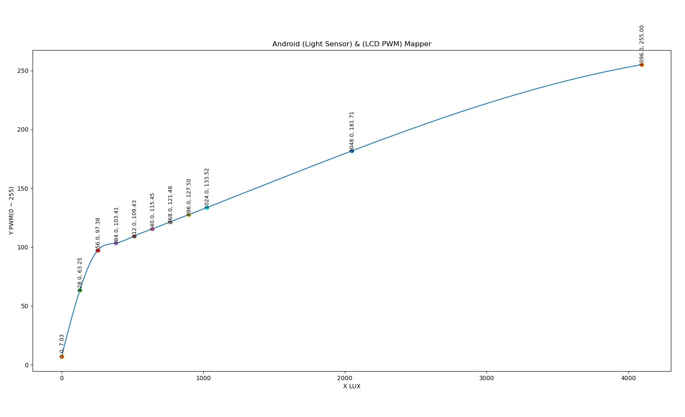

plot single curve
绘制一条MonotoneCubicSpline曲线
MonotoneCubicSpline

#!/usr/bin/env python3
# _*_ coding: utf-8 _*_
import numpy as np
from scipy.interpolate import CubicSpline
from matplotlib import pyplot as plt
import json
import PluginsPy
@PluginsPy.addRun
class MonotoneCubicSpline:
"""
可视化SimpleMappingStrategy实例变量MonotoneCubicSpline数据
@lux(50): get Brightness at this lux
@show(yes): yes to show MonotoneCubicSpline image, otherwise to no
@data(default/MonotoneCubicSpline.json): MonotoneCubicSpline曲线数据
"""
def __init__(self, kwargs):
'''
示例数据，从Android中通过dumpsys display命令，获取的SimpleMappingStrategy实例变量MonotoneCubicSpline数据
SimpleMappingStrategy
mSpline=MonotoneCubicSpline{[(0.0, 0.027559055: 0.0017224409), (128.0, 0.2480315: 0.0013841044), (256.0, 0.38188976: 5.302923E-4), (384.0, 0.4055118: 1.5908774E-4), (512.0, 0.42913386: 1.8454727E-4), (640.0, 0.4527559: 1.8454727E-4), (768.0, 0.47637796: 1.8454727E-4), (896.0, 0.5: 1.8454716E-4), (1024.0, 0.52362204: 1.8454721E-4), (2048.0, 0.71259844: 1.6244003E-4), (4096.0, 1.0: 0.0), (6144.0, 1.0: 0.0), (8192.0, 1.0: 0.0), (10240.0, 1.0: 0.0), (12288.0, 1.0: 0.0), (14336.0, 1.0: 0.0), (16384.0, 1.0: 0.0), (18432.0, 1.0: 0.0)]}
mMaxGamma=3.0
mAutoBrightnessAdjustment=0.0
mUserLux=-1.0
mUserBrightness=-1.0
'''
print(kwargs)
data = [
(0.0, 0.027559055, 0.0017224409),
(128.0, 0.2480315, 0.0013841044),
(256.0, 0.38188976, 5.302923E-4),
(384.0, 0.4055118, 1.5908774E-4),
(512.0, 0.42913386, 1.8454727E-4),
(640.0, 0.4527559, 1.8454727E-4),
(768.0, 0.47637796, 1.8454727E-4),
(896.0, 0.5, 1.8454716E-4),
(1024.0, 0.52362204, 1.8454721E-4),
(2048.0, 0.71259844, 1.6244003E-4),
(4096.0, 1.0, 0.0),
# (6144.0, 1.0, 0.0),
# (8192.0, 1.0, 0.0),
# (10240.0, 1.0, 0.0),
# (12288.0, 1.0, 0.0),
# (14336.0, 1.0, 0.0),
# (16384.0, 1.0, 0.0),
# (18432.0, 1.0, 0.0)
]
with open(kwargs["data"], 'r') as infile:
data = json.load(infile)["data"]
X1 = []
Y1 = []
for i in range(len(data)):
X1.append(data[i][0])
# Brightness量程(0 ~ 1)转为PWM量程(0 ~ 255)
Y1.append(data[i][1] * 255)
# 不转换PWM量程(0 ~ 255)的原因是和Android数据方便对比，Android默认Brightness量程(0 ~ 1)
# Y1.append(data[i][1])
# 生成曲线
cs = CubicSpline(X1, Y1)
if kwargs["show"] == "yes":
# 生成曲线x轴坐标点
xs = np.arange(0, X1[len(X1) - 1], 1)
# 绘制曲线，有x轴坐标点生成y坐标点：cs(xs)
plt.plot(xs, cs(xs), label="S")
# 绘制点以及文本
for i in range(len(data)):
# 绘制点
plt.plot(X1[i], Y1[i], 'o')
# 加入字符显示的偏移
plt.text(X1[i] - 15, Y1[i] + 0.02, str(X1[i]) + ", " + "{:.2f}".format(Y1[i]), fontsize=9, rotation=90)
plt.xlabel("X LUX")
plt.ylabel("Y PWM(0 ~ 255)")
plt.title("Android (Light Sensor) & (LCD PWM) Mapper")
plt.show()
else:
# 单独计算一个值
print("input lux: " + kwargs["lux"])
print("Brightness: " + "{:.2f}".format(cs(int(kwargs["lux"]))))
if __name__ == "__main__" :
print("main")